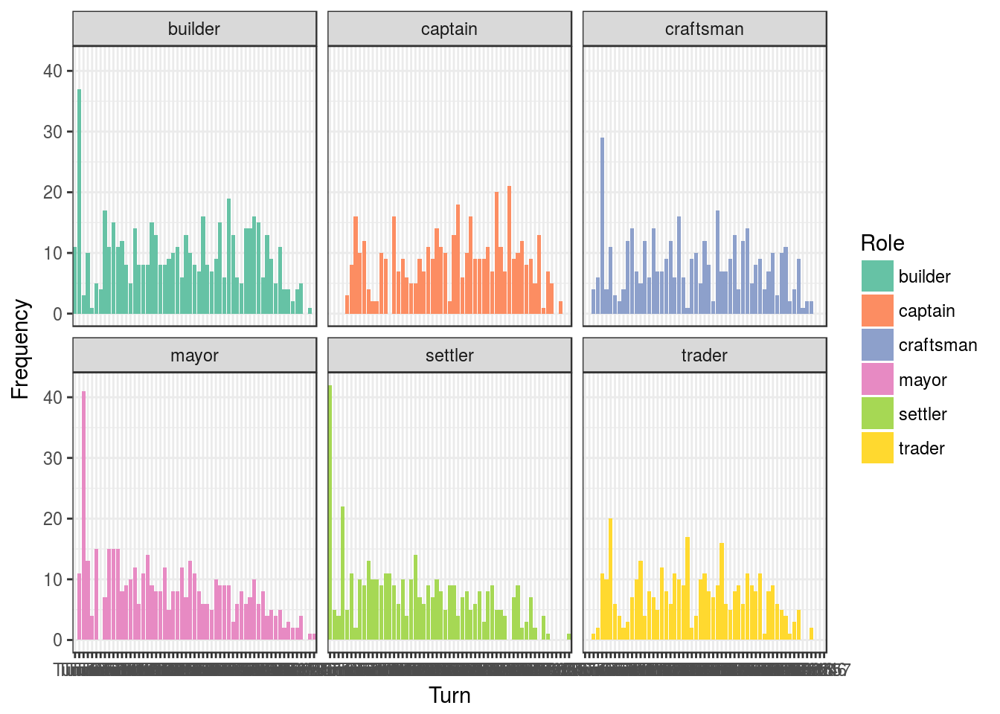
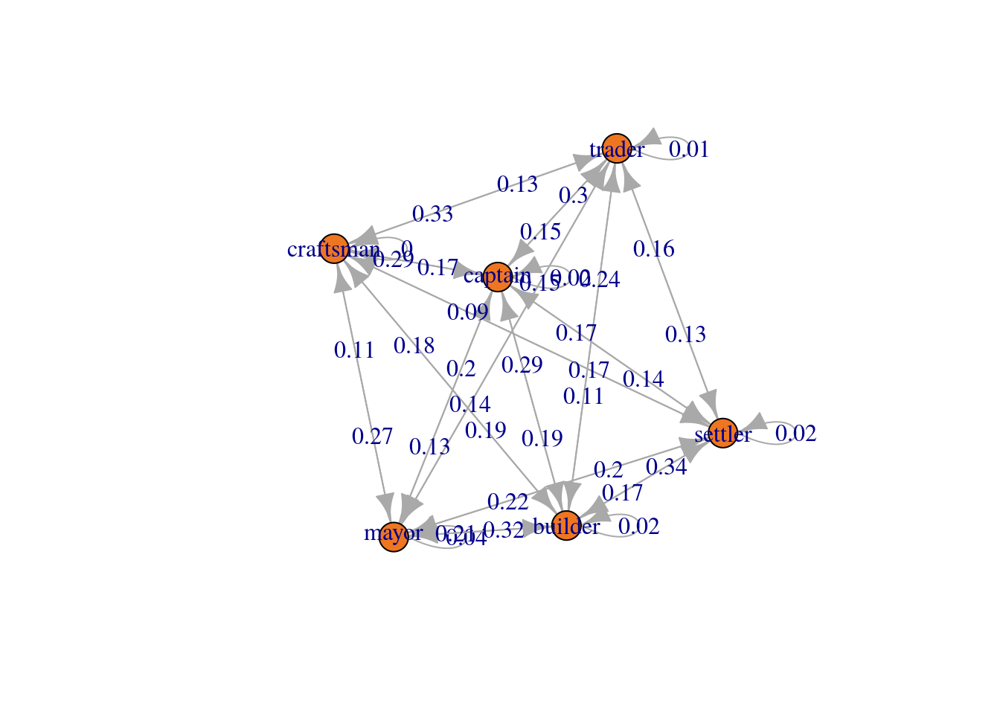
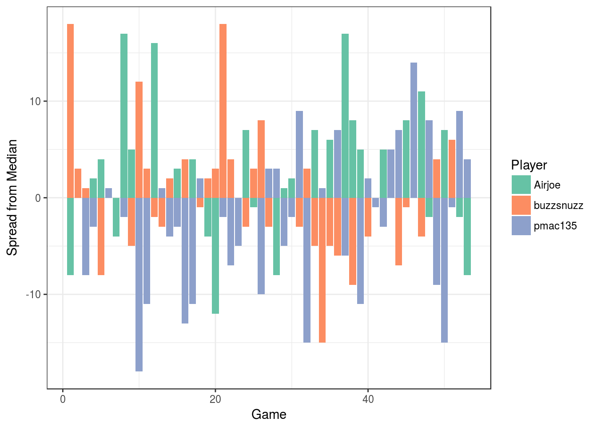
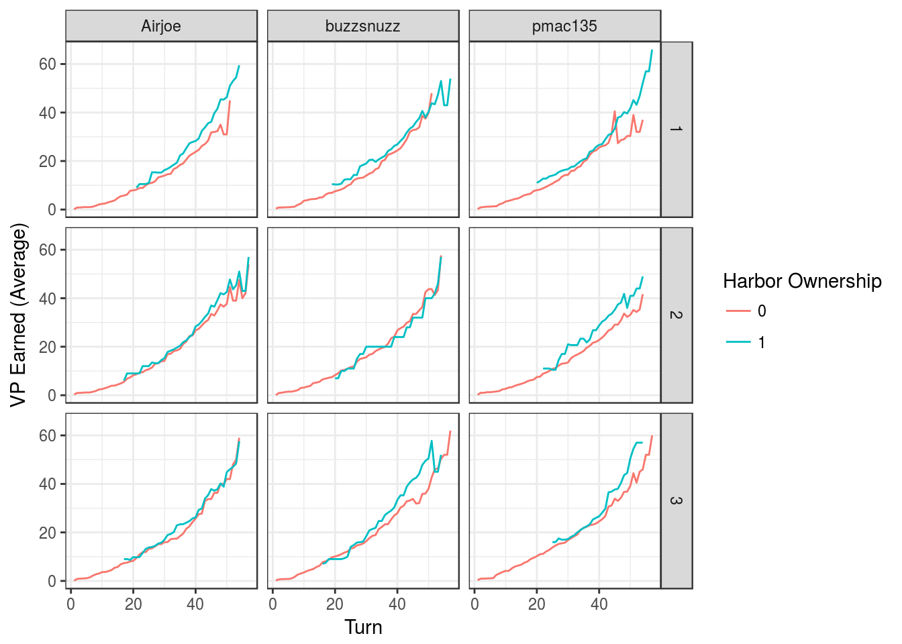
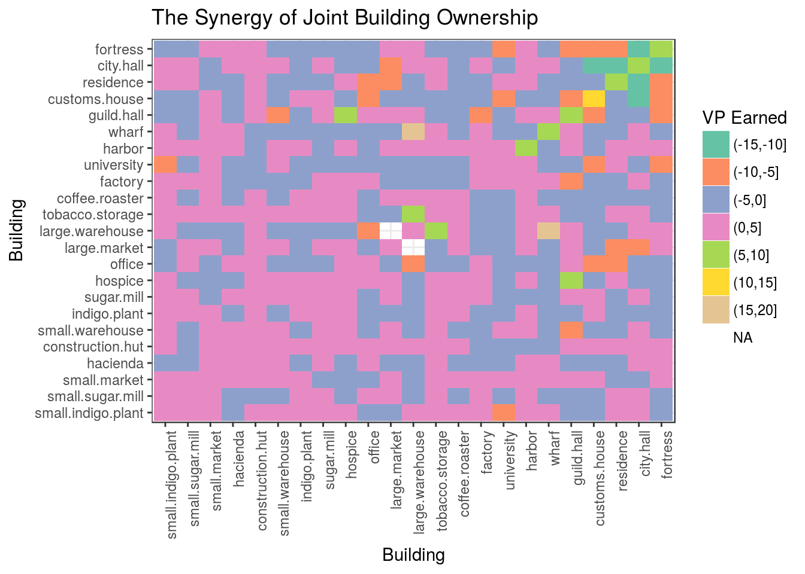

Puerto Rico: an Analysis of 100 Hours of Gameplay
An American tradition
Since moving to Australia, I have made it a point to stay connected with friends back home. For two of my old gaming buddies, we catch up regularly for a chat over a round of Puerto Rico, a resource management board game by Andreas Seyfarth. We play online through Board Game Arena, a free platform that provides a clean interface for dozens of board games.
As a coding project, I wrote a module in Python to scrape and parse logs from each of our games. Using this module, I retrieved data for (most) games played between the players ‘buzzsnuzz’ (me), ‘Airjoe’ (Joseph), and ‘pmac135’ (Patrick), excepting those that used expansion cards (or otherwise failed to download). This blog post is dedicated to these two who, being data fiends like myself, I hope will enjoy reading these results as much as I enjoyed generating them.
A game of quarry rock and roles
The retrieved data exist in two parts. The first part is simple, listing which roles were called (and by whom). The second part is comprehensive, listing what pieces each player acquired on each turn. Here, we import the first part of the data.
files <- list.files("data/", full.names = TRUE)
files.turns <- files[grepl("bga[0-9]+\\.csv", files)]How many games have we played?
length(files.turns)## [1] 53Each round, every player has a turn. How many turns are in a full game?
library(yuck)
turns <- lapply(files.turns, read.csv)
players := for(turn in turns) t(turn)[2,,drop=FALSE]
roles := for(turn in turns) t(turn)[1,,drop=FALSE]
table("Turns" = sapply(roles, length))## Turns
## 39 45 48 51 54 57
## 1 12 14 13 11 2Each turn, a player selects a role. Which roles are most popular?
table("Role" = unlist(roles))## Role
## builder captain craftsman mayor settler trader
## 533 445 413 456 405 370How does the popularity of each role change over time?
rolesm := for(turn in roles) as.data.frame(turn)
rolesm <- plyr::rbind.fill(rolesm)
colnames(rolesm) <- paste0("Turn", 1:ncol(rolesm))
rownames(rolesm) <- paste0("Game", 1:nrow(rolesm))
df.r <- reshape2::melt(t(rolesm))
colnames(df.r) <- c("Turn", "Game", "Role")
df.r <- ggplot2::remove_missing(df.r)
library(ggplot2)
ggplot(df.r, aes(x = Turn, fill = Role)) + facet_wrap(~Role) +
geom_histogram(stat = "count") +
scale_fill_brewer(palette = "Set2") + theme_bw() +
xlab("Turn") + ylab("Frequency")
Which roles tend to follow other roles? Note, the number nearest the node indicates the outgoing probability.
library(markovchain)
mcFit <- markovchainFit(sapply(roles, as.vector))
plot(mcFit$estimate, col = "blue")
Which roles tend to follow other roles? Note, rows indicate the first state.
mc <- mcFit$estimate@transitionMatrix
mc## builder captain craftsman mayor settler trader
## builder 0.01529637 0.19120459 0.193116635 0.3212237 0.17017208 0.1089866
## captain 0.28929385 0.02050114 0.170842825 0.2050114 0.16628702 0.1480638
## craftsman 0.17574257 0.28712871 0.004950495 0.1113861 0.09405941 0.3267327
## mayor 0.20814480 0.12669683 0.269230769 0.0361991 0.22171946 0.1380090
## settler 0.34090909 0.14141414 0.169191919 0.2045455 0.01515152 0.1287879
## trader 0.24383562 0.29589041 0.134246575 0.1534247 0.16164384 0.0109589What is the most common transition for each role?
L <- apply(mc, 1, function(x) rownames(mc)[which.max(x)])
L := for(l in 1:length(L)) paste(names(L)[l], "->", L[l])
L## [1] "builder -> mayor" "captain -> builder" "craftsman -> trader"
## [4] "mayor -> craftsman" "settler -> builder" "trader -> captain"The winning positioned here
Now, we import the second part of the data. We have one file per player per game.
files.a <- files[grepl("Airjoe.csv", files)]
data.a <- lapply(files.a, read.csv)
files.t <- files[grepl("buzzsnuzz.csv", files)]
data.t <- lapply(files.t, read.csv)
files.p <- files[grepl("pmac135.csv", files)]
data.p <- lapply(files.p, read.csv)First, let us calculate the winners for each game (and their score).
which.median <- function(x) (which(x == median(x)))[1]
vp.a <- sapply(data.a, function(d) sum(colSums(d[, grepl("vp_", colnames(d))])))
vp.t <- sapply(data.t, function(d) sum(colSums(d[, grepl("vp_", colnames(d))])))
vp.p <- sapply(data.p, function(d) sum(colSums(d[, grepl("vp_", colnames(d))])))
vp.atp <- data.frame(vp.a, vp.t, vp.p)
Winner <- c("Airjoe", "buzzsnuzz", "pmac135")[apply(vp.atp, 1, which.max)]
LoserM <- c("Airjoe", "buzzsnuzz", "pmac135")[apply(vp.atp, 1, which.median)]
Loser <- c("Airjoe", "buzzsnuzz", "pmac135")[apply(vp.atp, 1, which.min)]What player wins most often?
table("Player" = Winner)## Player
## Airjoe buzzsnuzz pmac135
## 21 17 15What is the spread?
gameorder <- order(as.numeric(gsub("(bga)|(\\.csv)", "", basename(files.turns))))
s.atp <- apply(vp.atp, 1, function(x) x - median(x))
rownames(s.atp) <- c("Airjoe", "buzzsnuzz", "pmac135")
df.s <- reshape2::melt(t(s.atp))
ggplot(df.s, aes(x = Var1, y = value, fill = Var2)) + geom_bar(stat = "identity") +
scale_fill_brewer(palette = "Set2") + theme_bw() +
xlab("Game") + ylab("Spread from Median") + labs(fill = "Player")
A game can change a lot depending on player order. Do some positions have an advantage?
turn := for(turn in turns) t(turn)[2,1:3,drop=FALSE]
WinnerPos := for(i in 1:length(turn)) which(turn[[i]] %in% Winner[i])
table("Position" = WinnerPos)## Position
## 1 2 3
## 22 11 20How does position affect each player?
table("Position" = WinnerPos, "Player" = Winner)## Player
## Position Airjoe buzzsnuzz pmac135
## 1 6 9 7
## 2 7 2 2
## 3 8 6 6Of yearnings and earnings
For statistical modeling and visualization, we want the data in long format. Here, we convert a list of matrices into one very large matrix. You can download this data set here.
gameid <- sapply(strsplit(basename(files.a), "-"), function(f) f[1])
data <- lapply(1:length(data.a), function(i){
data.frame(
"game" = gameid[i],
do.call("rbind",
list(
data.frame("name" = "Airjoe",
"pos" = grep("Airjoe", players[[i]])[1],
data.a[[i]]),
data.frame("name" = "buzzsnuzz",
"pos" = grep("buzzsnuzz", players[[i]])[1],
data.t[[i]]),
data.frame("name" = "pmac135",
"pos" = grep("pmac135", players[[i]])[1],
data.p[[i]])
)))})
df <- do.call("rbind", data)
df$vp <- df$vp_ship + df$vp_harbor + df$vp_bld + df$vp_bonusThe data above describe what pieces were acquired on each turn. However, we more often want to know whether a piece is held on a given turn. This means that we should arrange the data by the cumulative sum (per player per game). We do this with aggregate (followed by lapply to unnest the results). You can download this data set here.
df.cumsum <- aggregate(. ~ game + name + pos, df, FUN = cumsum)
df.cs <- lapply(1:nrow(df.cumsum), function(row){
df.i <- do.call(data.frame, df.cumsum[row,])
names(df.i) <- names(df.cumsum)
data.frame("X" = 1:nrow(df.i), df.i)
})
df.cs <- do.call("rbind", df.cs)Now, we can easily visualize the average number of victory points (VP) earned over the course of a game for each player. We know that starting position can influence game outcomes, so we will separate the trends based on this factor.
df.m <- aggregate(vp ~ name + X + pos, df.cs, mean)
ggplot(df.m, aes(x = X, y = vp, col = factor(pos))) + facet_grid(~name) +
geom_line() + scale_fill_brewer(palette = "Set2") + theme_bw() +
xlab("Turn") + ylab("VP Earned (Average)") + labs(col = "Position")
We can also visualize how ownership of a building changes the rate of VP earnings (as further broken down by player and position). For example, we see below how ownership of the “Harbor” building can yield more VP.
df.m <- aggregate(vp ~ name + X + pos + harbor, df.cs, mean)
ggplot(df.m, aes(x = X, y = vp, col = factor(harbor))) + facet_grid(pos~name) +
geom_line() + scale_fill_brewer(palette = "Set2") + theme_bw() +
xlab("Turn") + ylab("VP Earned (Average)") + labs(col = "Harbor Ownership")
Weighing in on the game
As an analyst and player, I want to know which buildings provide the most value in terms of VP earnings. One way to assess this is by fitting a linear model to VP earnings, and then comparing the weight of the coefficients for each building. By modeling turn order as a covariate (labeled as “X”), the coefficients of the linear model should estimate how well building ownership correlates with VP earnings while adjusting for the natural course of the game.
fit <- lm(vp ~ . + 0, df.cs[, c(1, 26:49)])
coefTotal <- t(t(coefficients(fit)))
colnames(coefTotal) <- "Weight"
round(coefTotal, 2)## Weight
## X 0.58
## small.indigo.plant -1.48
## small.sugar.mill -1.14
## small.market -1.18
## hacienda -1.55
## construction.hut -0.17
## small.warehouse 1.09
## indigo.plant -0.27
## sugar.mill 0.79
## hospice -0.13
## office -2.20
## large.market -0.30
## large.warehouse 3.80
## tobacco.storage 0.83
## coffee.roaster -0.20
## factory 1.23
## university 1.35
## harbor 3.96
## wharf 4.68
## guild.hall 4.83
## customs.house 7.12
## residence 4.59
## city.hall 4.00
## fortress 4.00How does the value of buildings (in terms of VP earnings) change for each player?
coefPerP <- lapply(unique(df.cs$name), function(name){
fit <- lm(vp ~ . + 0, df.cs[df.cs$name == name, c(1, 26:49)])
data.frame(name, t(coefficients(fit)))
})
coefPerP <- t(do.call("rbind", coefPerP)[,-1])
colnames(coefPerP) <- unique(df.cs$name)
round(coefPerP, 2)## Airjoe buzzsnuzz pmac135
## X 0.56 0.54 0.64
## small.indigo.plant -0.62 -0.81 -2.61
## small.sugar.mill -0.73 -1.19 -1.51
## small.market -1.90 -0.24 -0.85
## hacienda -1.68 -1.44 -2.67
## construction.hut -0.49 0.17 -1.65
## small.warehouse 3.02 1.95 -0.16
## indigo.plant 0.93 -0.28 -2.57
## sugar.mill 0.56 3.58 -0.37
## hospice -0.18 0.99 -1.51
## office -4.50 -0.72 -1.99
## large.market -0.73 -2.24 1.21
## large.warehouse 2.18 1.37 6.28
## tobacco.storage 0.91 1.74 0.31
## coffee.roaster 1.01 -0.44 -0.63
## factory 0.11 1.47 2.54
## university 6.19 2.29 -0.94
## harbor 3.39 4.30 4.06
## wharf 5.07 6.92 4.23
## guild.hall 6.90 3.50 2.93
## customs.house 7.75 8.47 6.79
## residence 6.54 3.33 1.52
## city.hall 3.10 5.55 4.40
## fortress 5.27 6.34 3.36How does the value of buildings (in terms of VP earnings) change for each player in first position?
df.cs$np <- paste0(df.cs$name, "-", df.cs$pos)
coefPerNP <- lapply(unique(df.cs$np), function(np){
fit <- lm(vp ~ . + 0, df.cs[df.cs$np == np, c(1, 26:49)])
data.frame(np, t(coefficients(fit)))
})
coefPerNP <- t(do.call("rbind", coefPerNP)[,-1])
colnames(coefPerNP) <- unique(df.cs$np)
round(coefPerNP, 2)[,1:3]## Airjoe-1 buzzsnuzz-1 pmac135-1
## X 0.52 0.48 0.70
## small.indigo.plant -1.20 -1.49 -2.80
## small.sugar.mill 2.14 0.27 -0.42
## small.market -0.94 1.72 -1.29
## hacienda -2.46 -1.59 -4.37
## construction.hut 3.38 2.27 -0.34
## small.warehouse 8.13 0.85 0.19
## indigo.plant 2.67 -0.71 -2.79
## sugar.mill 1.63 4.79 -0.91
## hospice 0.29 -0.48 -2.11
## office -1.90 -2.21 -2.69
## large.market 0.01 -1.75 13.03
## large.warehouse -4.06 3.92 7.08
## tobacco.storage 0.60 -0.12 -0.59
## coffee.roaster 2.13 1.60 -1.55
## factory -0.74 1.01 4.22
## university NA 3.26 -0.73
## harbor 3.28 4.92 2.32
## wharf 6.21 4.48 3.50
## guild.hall 10.36 3.35 -0.23
## customs.house 4.11 12.88 6.18
## residence 4.48 3.14 2.57
## city.hall 2.68 5.40 3.17
## fortress 4.91 9.55 3.05How does the value of buildings (in terms of VP earnings) change for each player in second position?
round(coefPerNP, 2)[,4:6]## Airjoe-2 buzzsnuzz-2 pmac135-2
## X 0.52 0.54 0.39
## small.indigo.plant -2.36 -0.92 -1.43
## small.sugar.mill -0.16 -1.64 -0.39
## small.market -0.14 -1.41 1.41
## hacienda -0.79 -1.64 0.08
## construction.hut 0.21 -0.33 -1.13
## small.warehouse 2.48 2.48 0.47
## indigo.plant -0.75 -0.24 -2.12
## sugar.mill 0.07 4.91 -0.92
## hospice 1.14 -0.32 -0.95
## office -5.15 6.31 3.98
## large.market -3.04 NA 1.13
## large.warehouse 6.95 2.86 2.76
## tobacco.storage 0.31 3.43 2.47
## coffee.roaster 0.32 -0.92 1.14
## factory 2.11 0.85 4.31
## university 3.63 1.42 2.31
## harbor 2.89 0.53 8.33
## wharf 5.26 6.08 4.12
## guild.hall 5.15 3.11 8.26
## customs.house 7.40 8.89 6.66
## residence 7.57 NA 4.07
## city.hall 4.82 6.43 2.16
## fortress 8.28 9.57 6.92How does the value of buildings (in terms of VP earnings) change for each player in third position?
round(coefPerNP, 2)[,7:9]## Airjoe-3 buzzsnuzz-3 pmac135-3
## X 0.50 0.59 0.69
## small.indigo.plant 2.81 3.72 -0.95
## small.sugar.mill -0.92 -3.35 -1.31
## small.market -2.54 0.40 -2.24
## hacienda -0.07 2.24 -0.90
## construction.hut 0.60 -2.92 -1.95
## small.warehouse 2.89 1.02 -0.16
## indigo.plant 6.68 0.76 9.36
## sugar.mill 1.25 -1.40 -0.59
## hospice 0.18 2.21 -0.54
## office -5.08 -0.55 -2.56
## large.market NA -2.89 2.20
## large.warehouse NA 0.13 8.12
## tobacco.storage 1.83 1.26 -0.50
## coffee.roaster 2.88 0.06 -0.21
## factory 0.04 -0.60 -0.23
## university 16.87 -2.74 1.54
## harbor 2.23 3.96 2.33
## wharf 4.07 7.22 3.23
## guild.hall 7.50 8.43 3.66
## customs.house 10.20 8.66 6.65
## residence 8.79 5.83 NA
## city.hall 5.18 6.97 4.83
## fortress 5.56 0.60 1.49The linear models above implicitly assume that the ownership of each building contributes independently to VP earned. However, we might expect that the joint ownership of some building pairs could contribute more toward VP earnings than the ownernship of either building individually. We can estimate the synergistic value of joint ownership by fitting another linear model that considers the interaction effect between building ownership. For this, we fit 529 linear models (i.e., for all pairs of 23 buildings), wherein we replace each pair of two-level factors (i.e., ownership of building A or B as binary states) with a four-level factor (i.e., ownership of neither, the first, the second, or both). As above, we include turn order as a covariate. However, because we fit a separate model for each building pair, we should fix the turn order coefficient (chosen as 0.58 from above) to keep results comparable across the 529 models.
df.b <- df.cs[, c(1, 26:49)]
buildings <- names(df.b)[2:(length(df.b)-1)]
outer <- lapply(buildings, function(b1){
inner <- lapply(buildings, function(b2){
form <- as.formula(paste0("vp ~ ", b1, " * ", b2, " + offset(I(0.58 * X)) + 0"))
fit <- lm(form, df.b)
coefTotal <- t(coefficients(fit))
if(b1 == b2){
colnames(coefTotal) <- "X11"
}else{
colnames(coefTotal) <- c("X10", "X01", "X11")
}
data.frame("A" = b1, "B" = b2, coefTotal)
})
do.call(plyr::rbind.fill, inner)
})
interactions <- do.call(plyr::rbind.fill, outer)Here, the coefficient “X11” represents the benefit of joint ownership (i.e., the value added beyond owning each building individually “X10” and “X01”). As such, we can conceive of “X11” as a kind of synergy score which describes the amount of VP earned by owning both buildings together that is not simply explained by owning them separately.
df.i <- reshape2::melt(interactions[,c("A", "B", "X11")])## Using A, B as id variablesdf.i$valuecut <- cut(df.i$value, seq(-25, 25, 5))
ggplot(df.i, aes(x = B, y = A, fill = valuecut)) + geom_tile() +
scale_fill_brewer(palette = "Set2") + theme_bw() +
theme(axis.text.x = element_text(angle = 90, hjust = 1)) +
xlab("Building") + ylab("Building") + labs(fill = "VP Earned") +
ggtitle("The Synergy of Joint Building Ownership")
Final remarks
I have gained a few insights from this analysis, but will leave it to the reader to draw their own conclusions. However, I wish to say that I am a big fan of interpreting linear model weights directly, and I think this use case provides a good example of how coefficients can simplify the interpretation of multi-dimensional data. Still, these weights carry with them the age old problem of post hoc ergo propter hoc. This analysis only tells us whether building ownership correlates with VP earnings (and not whether it is causal). It is always possible that players who are not earning VP acquire certain buildings because they are already in a rut!
© 2018 | thom@tpq.me | Twitter | GitHub